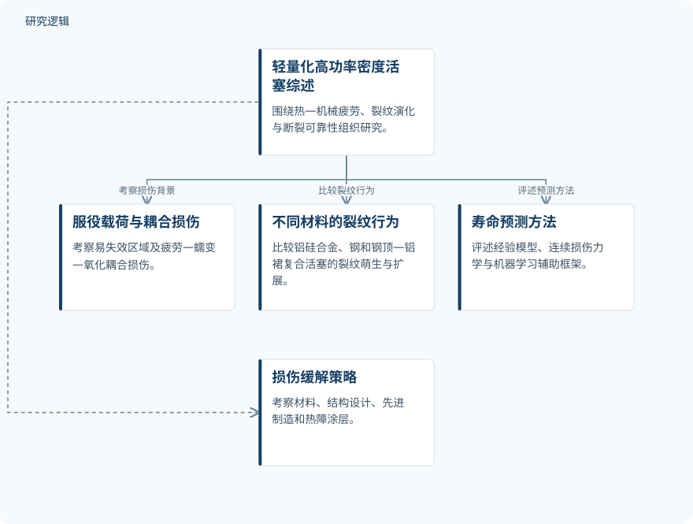

摘要解读
轻量化高功率密度柴油机活塞的热机械疲劳、裂纹演化与断裂可靠性综述
Thermo‐Mechanical Fatigue, Crack Evolution, and Fracture Reliability of Lightweight High‐Power‐Density Diesel Pistons: A Review
解读更新 2026-10-21 10:19 · 依据公开摘要整理，未核验全文细节
柴油活塞在提高功率密度、减轻重量的同时，面临更严苛的热—机械载荷。如何理解损伤耦合、裂纹演化与寿命预测之间的联系，是这篇综述的阅读重点，也是讨论活塞可靠性设计的基础。
文章目录
轻量化与高功率密度下的活塞可靠性
这篇综述聚焦轻量化、高功率密度柴油活塞的热—机械疲劳、裂纹演化与断裂可靠性。摘要将服役载荷、易失效关键区域以及疲劳—蠕变—氧化耦合损伤纳入讨论，提示理解活塞失效不能只关注某一种损伤机制。
从材料裂纹行为梳理到寿命预测评述
本文采用综述与比较评述的方式组织研究，而非在摘要中报告一项新的活塞试验。材料比较涵盖铝硅合金活塞、钢活塞以及钢顶—铝裙复合活塞，关注裂纹萌生和扩展行为。
在寿命预测方面，作者评述了经验性 Coffin–Manson 模型、连续损伤力学及机器学习辅助框架；在损伤缓解方面，则考察材料、结构设计、先进制造与热障涂层等策略。摘要未说明文献检索、筛选和质量评价的具体流程。
依据摘要整理的活塞可靠性综述框架


概括摘要明确列出的综述对象与评述内容，不代表论文原图，也不表示实验步骤或技术验证流程。
下载 SVG图示关系说明
实线表示相邻阶段的信息流，虚线表示跨阶段联系或反馈。
轻量化高功率密度活塞综述 → 服役载荷与耦合损伤：考察损伤背景；轻量化高功率密度活塞综述 → 不同材料的裂纹行为：比较裂纹行为；轻量化高功率密度活塞综述 → 寿命预测方法：评述预测方法；轻量化高功率密度活塞综述 → 损伤缓解策略：考察缓解策略
单一损伤机制不足以描述真实服役
摘要明确给出的核心判断是：单一机制模型不足以应对真实服役条件。这一判断与文中关注的疲劳—蠕变—氧化耦合损伤相呼应。不过，摘要没有展开这些机制如何相互作用，也没有给出不同材料裂纹行为的具体差异。
作者将多尺度原位表征、物理信息驱动的数据预测、智能材料设计与实时健康监测列为关键研究需求。这些内容属于综述提出的未来方向，不能理解为本文已经验证了相关技术的预测精度或可靠性收益。
摘要尚不能回答模型与材料孰优孰劣
仅凭本次摘要，无法判断综述覆盖的文献数量、试验样本规模、载荷与温度范围，也无法确认材料比较是否基于一致工况。各类寿命模型的误差、适用边界及独立验证范围同样未在摘要中报告，因此不能据此排列模型优劣或判定某类活塞更可靠；这些信息仍需进一步阅读原文确认。
阅读启发：追问数据预测如何承接损伤物理
阅读启发：后续阅读可重点关注，机器学习辅助框架如何处理疲劳、蠕变与氧化的耦合关系，以及作者依据什么证据评价其适用性。对于智能运维方向，也可追问实时健康监测与裂纹演化、寿命预测之间如何建立联系。这里提出的是阅读问题，而非已经实现的技术效果。
以上为本站阅读启发与建议，不是论文已验证的结论。